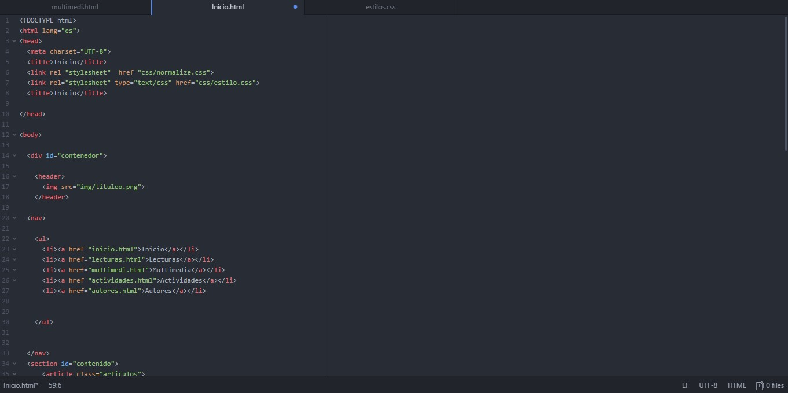

Es un lenguaje de hipertexto este usa un leguaje de etiquetas para crear páginas web, este surge de las etiquetas Standard Generalized Markup Language (estándar de lenguaje marcado generalizado). es un sistema que etiqueta muchos documentos dentro de una lista, se puede decir que es un sistema de formato abierto ya que no hay reglas para la organización, HTML 5 utiliza códigos que se conocen como script estos brindan infurciones especificas a los navegadores que se encargan de procesar el lenguaje, los scripts más conocidos son PHP y JavaScript.
• Estructura(HTML)
• Estilo (CSS)
• Funciones(JavaScript)
La paginas comienza con <HTML> seguido por la cabecera <HEAD> y </HEAD> luego <BODY> en este se indica el comienzo de la página y se especifican las instrucciones HTML finalizando con </BODY> se indicará la terminación de la página con </HTML>.
<HTML>
<head>
Información técnica para el navegador
</head>
<body>
Contenido que se mostrara en la pagina
</body>
</HTML>
De click en el video donde podrás aprender mas sobre HTML 5.